背景: 圆圈3岁7个月
地点：广州·番禺·长隆野生动物园
人物：双胞胎兄弟圆圆&圈圈，圆圈爸和圆圈妈，圆圈大大姨一家
文|圆圈妈，一个文思如尿崩的双胎妈妈
图|圆圈妈，菜鸟摄影师一枚
· 正 · 文 · 来 · 啦 ·
2019年的第一波出游贡献给了广州长隆野生动物园，此次出游完全是心血来潮。
本来只是去广州办完事后去广州动物园看下“草泥马”就回深圳，结果鬼使神差去了长隆野生动物园。
还好，这是一个非常愉快的旅程，特发此亲子游攻略分享给你们哈！
【01】酒店篇
广州长隆旗下有长隆酒店，香江大酒店，熊猫酒店。
我们毫不犹豫订了长隆酒店，虽然最贵但是性比价最高，事实证明，我们的选择是对的。
除了客房和设施稍显老旧，基本上没啥好挑剔的了，最主要的是长隆酒店的客人乘坐空中缆车可以走快捷通道。
你知道走快捷通道有多爽吗？
当你穿过排长龙的队伍一路畅通无阻被旁人艳羡时，你那颗粗俗骄傲的心会瞬间膨胀，怒放，乱颤...
当你通过快捷通道乘坐空中缆车溜了一圈回到原点时，才发现比你早去排队等候的游客还在底下煎熬的等待中。
这些天差地别的待遇，只有一个原因：钱在作怪。
我们买的是套票1607元一晚，包含两个大人的门票（随行的小孩子1.0以下免费）和自助晚餐（随行的小孩子1.2以下免费。）
长隆酒店自带的晚餐在白虎自助餐厅，内有火烈鸟观赏区，可以一边观鸟一边享受美食。
哎，醉翁之意不在酒。
这是存心不让小朋友好好吃饭的意思，圆圈兄弟只顾着看火烈鸟，最爱吃的冰淇淋都无暇顾及。
但是长隆的自助晚餐菜色偏少，味道一般，没法儿跟珠海横琴湾酒店比。
长隆酒店的客房超大，尤其是床，感觉是两张1.2的床拼起来的，足足有4米多宽。
对于平时挤在一米五的小床上睡的我们一家四口来说，这种待遇实在是太奢侈了。
客房的用品也很人性化，大人和小童用品都标配齐全，比如洗发水，沐浴露，拖鞋，浴袍...
最贴心的是，居然有儿童马桶坐垫，这对于习惯用“臭臭盆”解决大号的圆圈兄弟来说简直是皇恩浩荡啊。
除此之外还有童趣园，负一楼的儿童乐园有一个偌大的波波池，非常刺激孩子们的肾上腺素。
逛了一天的圆圈兄弟，早已昏昏欲睡，看到游乐场那一刻，瞬间清醒了，于是就继续在里面嗨了一个半小时。
只需要拿着房卡去服务台登记下就可以进去里面免费游玩，注意哦，每间房有两次游玩机会。
酒店有免费的接驳车往返接送，直达动物园南门，耗时约8分钟，候车时间也不用太久，基本上，上一辆车刚走，不出3分钟，下一趟车就来了。
【02】游玩篇
长隆野生动物园很大，一天时间全部景点看完，几乎不可能，更何况还带着两个随时都会出状况，掉链子的小屁孩。
只能选择一些精华核心的景点，以下是个人觉得必玩体验和必去景点。
①必玩体验—空中缆车
空中缆车有3条线路：环园线、天鹅湖线和非洲草原线。
环园线，顾名思义，就是围绕着整个园区溜一圈。
起始站均是熊猫乐园站，途径站点非洲草原站和天鹅湖站，三个站点成三角形，如下图所示。
注意，乘坐环园线，中途不能下车，哪里上车就从哪里下车，环园一圈的时间约30—40分钟。
天鹅湖线，从“天鹅湖站”到“熊猫乐园站”的路线，可饱览天鹅湖和鸳鸯湖的美景，时间约15分钟。
非洲草原线，从“天鹅湖站”到“熊猫乐园在”的路线，途径“非洲草原站”，欣赏到园区最精华的区域—非洲大草原。
圆圈兄弟是缆车控，对半空中飞来飞去的缆车毫无免疫力，我们一入园就直奔空中缆车。
壮着我们是VIP游客，可以走快捷通道，我们坐了两次环园线，天鹅湖线和非洲草原站各坐了一次。
值得一提的是，我们第二次乘坐环园线时，遇上了底部透明的轿厢，景观720°体验。
看着长颈鹿在我们脚底下慢悠悠地吃草，自住观赏区的小火车在我们脚底下呼啸而过，实在妙哉！
这种“会当凌绝顶”的感觉好赞哦！
☞☞TIPS☜☜：
乘坐缆车不用额外收费，门票已经包含在内。
若需走快捷通道，则要另外购买VIP票。
若是长隆酒店和熊猫酒店的客人，可免费走快捷通道，只要跟工作人员出示房卡即可。
可无限次走快捷通道，想溜几圈，你说了算。
轿厢限坐8个人，半开放式的，为了怕你的手机掉下去，工作人员会给你配上一个透明的手机袋，挂脖子上，此服务免费。
底部透明的轿厢可遇也可求，如果你不介意等，可以跟工作人员要求，一般都不会拒绝你的。
长隆野生动物园真的太大了，若不是有空中缆车，每个景点之间来来回回还挺折腾的。
强烈建议走快捷通道！
不然，要么是耗在等待坐缆车的路上，或者是累倒在走马观花的途中。
②必玩体验---小火车
坐空中缆车的时候，会经过非洲草原站，脚底下就是自助观赏区。
火车上的人羡慕你飘在半空中，美景一览无遗，而你也非常羡慕坐在火车内的人，可以和动物们静距离接触。
因此，当我们在半空中看到小火车从一群长颈鹿的身边呼啸而过时，真的觉得好过瘾啊！
于是我们坐完一圈环园线，马不停蹄去体验了天鹅湖线，因为那里下来之后就是小火车的入口。
遗憾的是，我们去的时候正是上午排队高峰期，只好在天鹅湖广场附近溜达，等到下午人少才去体验。
难怪有人说这个自助观赏区是压轴景点！果然名不虚传！
小火车慢悠悠走着，沿途可以与动物近距离接触，注意，是完全没有隔离的0距离接触，不像深圳动物园，游客进入猛兽区还要被关在笼子里。
每辆车上有讲解员，到了每一处景点，讲解员都会做个简单介绍和温馨提示。
经过猛兽区的时候，有点小小的害怕，我们与那些老虎只是隔了一道护城河的距离，好担心它们突然兽性大发扑过来了。
遗憾的是，对小火车无比期待的圆圈兄弟，刚坐上小火车没多久就睡着了。
不过坐在摇摇晃晃的小火车上，确实很犯困，即便你深处猛兽区，也难以抵挡得住睡意。
☞☞TIPS☜☜：
乘坐小火车免费，一趟车可以坐100人左右
有设置快捷通道，但是仅限香江酒店的房客。
核心景点，做好排长龙的心理准备，通常上午人较多，推荐下午三四点钟去排队，人较少。
严格遵守入园规则，小火车半封闭式，会途径猛兽区，为了安全起见，不要把头探出去。
让孩子坐在座位的内侧，避免孩子玩性大发，伸手去撩拨动物。
③必玩体验---萌帅酷乐园
这个乐园类似于游乐场，没有动物可以看，若时间不充裕可以忽略不计，因为没啥特色。
不过带着孩子的家庭建议去体验下，因为里面的游玩设施均免费，而且等待时间也不长。
最主要是孩子们爱玩。
注意：有些项目对身高有限制，比如风筝飞人，必须达到1.2米以上才可以进场游玩，其余的项目达到1米就可以了。
④必去景点---白虎山
顾名思义，看老虎的地方，白虎山有表演，可观看白虎跳水和白虎幼儿园。
但我们去的时候已经五点钟了，错过了最后一场表演。
因此，对园区动物表演感兴趣的你一定要留意指示牌提示的表演时间。
在白虎幼儿园可以与白虎幼崽互动，无奈我们去的不是时候，小白虎都回去休息了。
只能隔着屏幕看睡着的小白虎，这么萌萌哒的小动物，好像一只大肥猫，实在很难想象，长大后的它们是一只会吃人的野兽。
⑤必去景点—侏罗纪森林
侏罗纪森林的奇特之处在于，森林门口的那些人工水雾和惊悚的恐龙声音，让众多小朋友还没进去就哭倒一片。
圆圈兄弟明知山有虎偏向虎山行，丝毫不为所动，像沙丁鱼一样，一个劲地往人群里钻，恐龙声音越惊悚，他们就越兴奋。
哎，只有我心里清楚，他们一定会吓尿的。
果然，不出我所料，他们看到会喷水的恐龙，马上躲到我身后，使劲拽着我要走，为了维护小男子汉的形象硬是不哭出来。
活脱脱的现实版“叶公好龙”
的确，这些恐龙做得很逼真，而且声音效果和氛围都做得很到位，让人真的恍如进入了侏罗纪森林，非常值得带小朋友来探险哦。
⑥必去景点—青龙山
紧挨着侏罗纪森林的就是青龙山，主要是看猴子和鸟类。
不像深圳野生动物园，这些鸟类并没有关在笼子里，而是到处飞。
你可能随时随地会被一群五颜六色的鸟类围攻，也可能不小心摸到头上正好有一坨鸟屎…
当然，你也不吃亏。
有些猴子很喜欢耍酷，看见你来捧场，就会在你头顶上荡秋千，来一个泰山杂耍，完了，还给你抛个媚眼。
⑦必去景点—火烈鸟
火烈鸟有两种颜色，红色羽毛的来自古巴，白色羽毛的来自美洲。
从南门进去，顺着指示牌走5分钟左右就到了，一大片火烈鸟非常壮观。
仔细一看，它们居然是单脚站立着睡觉的！非常有意思！
【03】其他注意事项
⑴ 去动物园一定要挑淡季去
3月份的广州，不冷不热。我们去的时候正好阴天，而且还不算旅游旺季。
游客较少，路宽人少，舒适度大大提高。
去过深圳野生动物园，买的是特价票，整个园区都是人！人！人！根本看不到动物的影子。
感觉更像是动物看人，而不是人看动物。
⑵ 园区的食物和水非常贵
两个小雪糕，30元两个，而且不能单买，一瓶最便宜的矿泉水要10元。
在里面餐厅吃一顿饭也贵的离谱，我们七大三小，点了6个套餐，7杯果汁，花了1380元。
进入园区禁止带食物，而且很严格，连水果都不能带。
⑶注意儿童的身高限制
野生动物园规定身高1米以上的小孩子要收费，但实际还是略显宽松。
圆圈兄弟其实有1米多一点，工作人员也没说啥就放行了。
我们起初好担心要收费，结果有惊无险，这种感觉就好像捡到500块钱一样，兴奋极了！
⑷ 园区的交通工具
园区的交通工具有免费的空中缆车，但等待时长，有电瓶观光车，30元一位，还有婴儿车租赁，100元一辆。
总结，个人感觉，带着孩子去长隆野生动物园，一天时间很紧，基本上都是走马观花地过下场子，建议至少准备两天时间才能玩得尽兴。
-END-
重磅互动
#你希望写什么育儿经验干货？#
评论区聊一聊
随便提，万一下篇就写了呢？
关于这个号
谢谢关注！
我是圆圈妈
85后，全职妈妈
家有孖仔两枚，圆圈&圈圈
双胞胎育儿公众号：孖仔帮
ID:twinsbang
旨意分享双胞胎育儿经验帮助双胞胎家庭
有经验可循
有组织可靠
希望我的经验对您有所启发
期待与您一起共享双胞胎育儿经

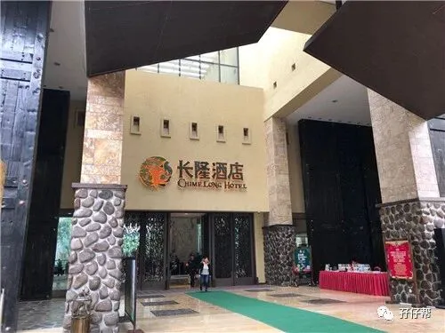
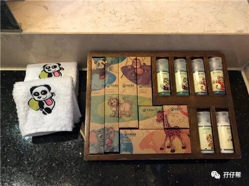
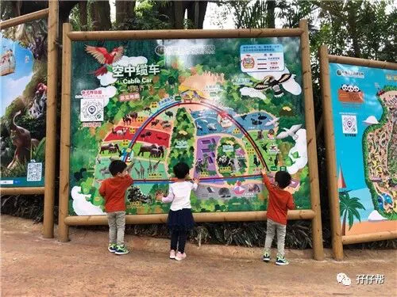
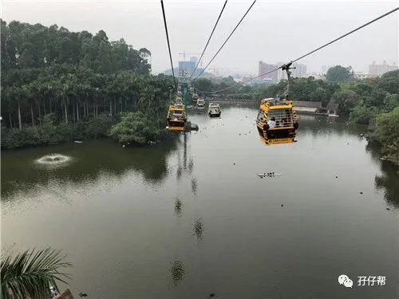
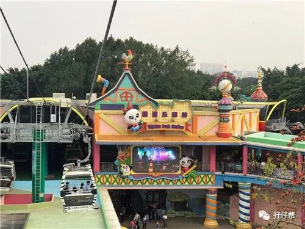
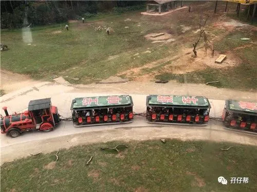
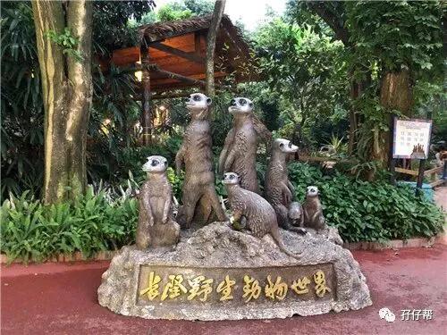
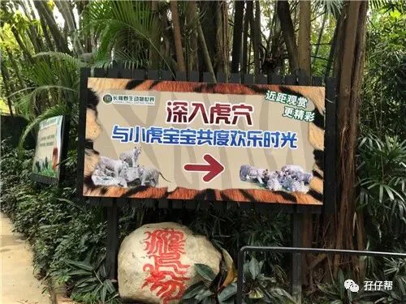
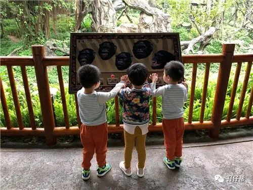
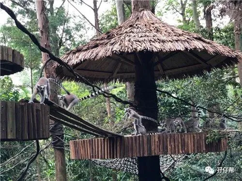
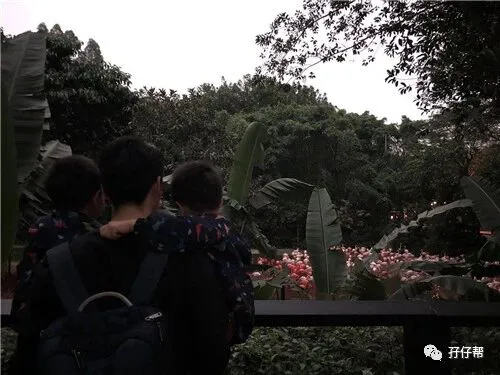
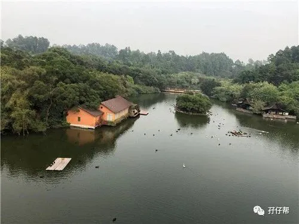